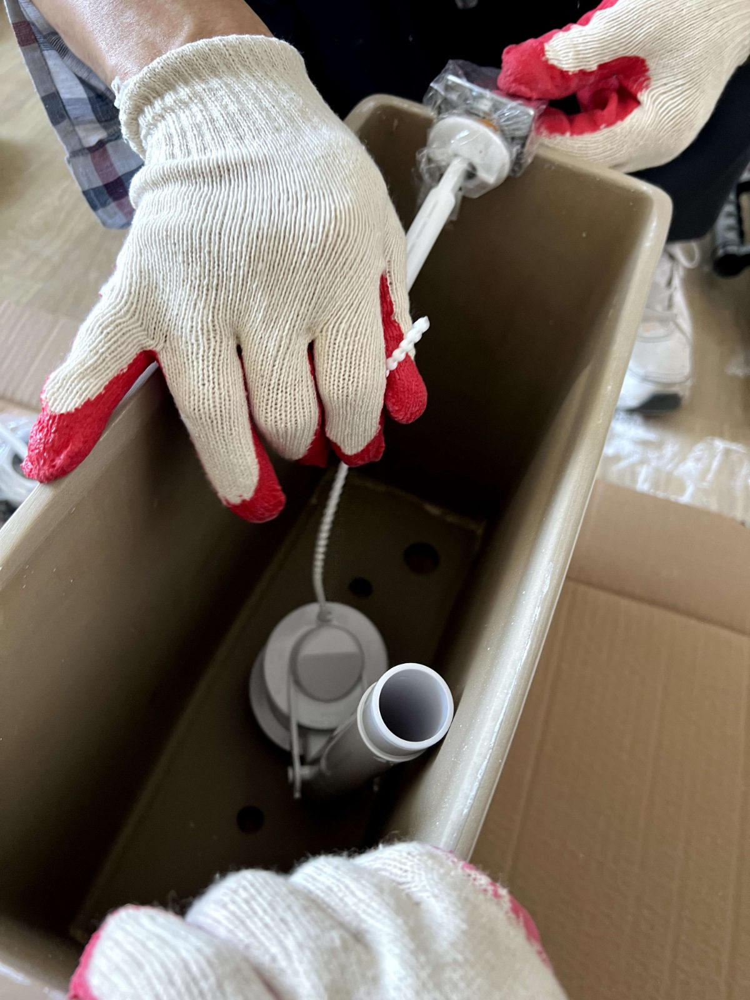

대전 대자연아파트 욕실 수전 홀 타공과 위생기구 설치

타일 위에 수전 홀을 타공하고 위생기구를 설치한 마감 공정 기록입니다. 욕실의 완성도는 이 마지막 단계에서 갈립니다.
어떤 공사였나요
욕실 마감 공정 현장입니다. 타일 위에 수전이 나올 홀(구멍)을 타공하고, 세면기 등 위생기구를 설치했습니다.
수전 홀 타공
타일 위에 구멍을 내는 작업이라 위치가 어긋나거나 타일이 깨지면 되돌리기 어렵습니다. 배관 위치를 정확히 확인하고 타공 위치를 잡은 뒤, 타일이 깨지지 않도록 천천히 타공했습니다.
기구 설치와 누수 확인
기구 설치 후 급수·배수를 모두 열어 연결부 누수를 확인했습니다. 설치 직후에는 멀쩡해 보여도 시간이 지나 미세하게 새는 경우가 있어, 연결부 조임과 실링을 꼼꼼히 봅니다.

관리 팁
세면기 아래 배수 트랩 연결부는 미세 누수가 흔한 자리입니다. 반년에 한 번쯤 손으로 조임 상태를 확인해 보시면 좋습니다. 기구 교체나 수전 교체 같은 부분 공사도 가능합니다.